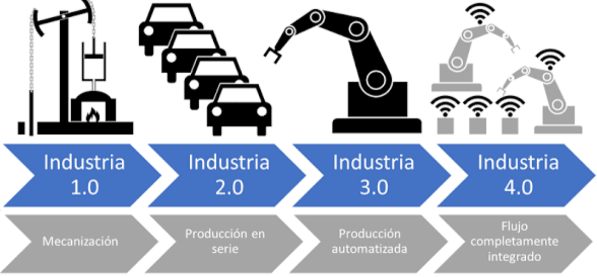
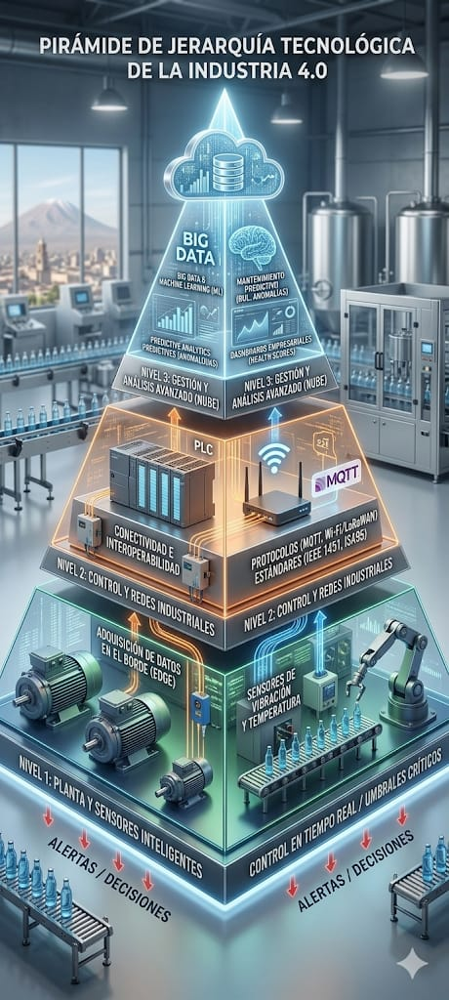
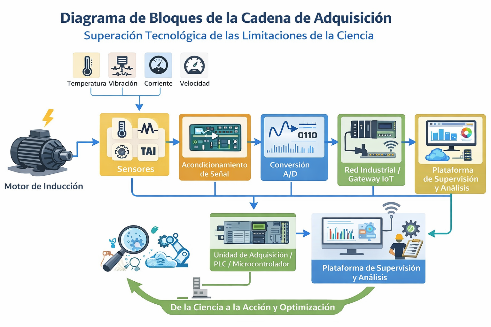

1. Línea de eventos desde la Ciencia Fáctica hasta la Tecnología Aplicada en la Industria 4.0
El punto de partida es el efecto fotoeléctrico. Primero se observa el fenómeno: una superficie metálica puede liberar cargas al ser iluminada. Después aparece el fundamento científico: la luz está formada por fotones que transfieren energía a los electrones del material. Si la energía es suficiente, los electrones son expulsados, mostrando que la luz también tiene comportamiento de partícula.
Más adelante, ese conocimiento se transforma en tecnología útil. A partir del principio fotoeléctrico se desarrollan sensores capaces de detectar variaciones de luz y convertirlas en señales. Luego, con la evolución industrial, estos sensores pasan a utilizarse para detección de objetos, conteo, posicionamiento y supervisión de procesos.
Finalmente, en Industria 4.0 el sensor deja de trabajar de forma aislada y se integra con controladores, redes industriales y plataformas de supervisión. Así ya no solo detecta, sino que también genera información útil para trazabilidad, monitoreo y toma de decisiones automáticas.
Descubrimiento
Heinrich Hertz observó el fenómeno y luego Einstein lo explicó desde la teoría cuántica.
Fundamento
Los fotones entregan energía a los electrones. Si esa energía basta, los electrones salen del material.
Desarrollo tecnológico
Surgen sensores fotoeléctricos con distintos modos de detección: beam break, beam make, difuso y retroreflectivo.
Integración 4.0
El sensor se convierte en parte de una red conectada que comparte datos en tiempo real.

Fenómeno físico
La luz produce efectos directos sobre la materia.
Explicación científica
La frecuencia y energía de la radiación determinan la emisión de electrones.
Sensor industrial
El principio físico se convierte en un dispositivo de detección sin contacto.
Planta inteligente
El sensor se conecta con PLC, red industrial y supervisión en tiempo real.
2. Análisis crítico
Si un sensor de temperatura convencional mide una variable, ¿qué lo convierte en Tecnología 4.0?
La diferencia no está solamente en la medición. Un sensor convencional capta una variable física y entrega una señal. En cambio, un sensor 4.0 se integra dentro de un sistema inteligente y conectado: transmite datos en tiempo real, se comunica con otros equipos o redes, almacena información para análisis histórico y participa en decisiones automáticas del proceso.
En otras palabras, deja de ser un simple instrumento de medición y pasa a formar parte de un sistema digital más amplio, útil para supervisión, optimización del proceso y anticipación de fallas.
- Transmite datos en tiempo real.
- Se comunica con redes industriales o plataformas.
- Permite monitoreo remoto.
- Genera históricos para análisis.
- Apoya mantenimiento predictivo.
| Industria 3.0 | Industria 4.0 |
|---|---|
| Automatiza procesos con electrónica y TI. | Automatiza y además conecta, analiza y optimiza en tiempo real. |
| El sensor mide y manda una señal local. | El sensor comparte datos, se integra a red y alimenta decisiones automáticas. |
| Enfoque local y funcional. | Enfoque inteligente, conectado e interoperable. |
3. Diseño conceptual
El problema planteado es una planta embotelladora local en Arequipa con paradas no programadas por fallas de motores. Para abordar esto, el diseño conceptual se divide en tres partes: cimentación científica, capa tecnológica e integración 4.0.
Cimentación científica
- Vibración: variable mecánica que ayuda a reconocer desequilibrios o fallas.
- Temperatura: variable térmica que permite identificar sobrecarga o mal funcionamiento interno.
- Humedad: variable del entorno importante por la condensación en la embotelladora.
- Potencia: variable eléctrica ligada a corriente y voltaje; fuera del rango correcto acelera desgaste.
Capa tecnológica
La cadena de adquisición se basa en una cámara y sensores de velocidad y movimiento. La cámara inspecciona el nivel de llenado de las botellas, mientras que los sensores supervisan el comportamiento dinámico del transporte accionado por el motor. Si se detectan botellas incompletamente llenas y además aparecen caídas de velocidad o movimientos anormales, el sistema interpreta una posible falla del motor.

Análisis en el borde
Filtrado, FFT y umbrales críticos ejecutados localmente en PLC o microcontrolador.
Análisis predictivo
Detección de anomalías y cálculo de vida útil remanente en nube o servidor.
Visualización y acción
Gemelo digital, dashboard de salud del motor y alertas inteligentes vía MQTT.
4. Cuestionario
¿Es la electrónica de la Industria 4.0 una nueva ciencia o una optimización extrema de la tecnología existente?
Es una optimización extrema de la tecnología existente. La base sigue siendo la misma ciencia, pero ahora se integra con inteligencia artificial, IoT, conectividad entre dispositivos, nube y big data. Por eso no constituye una ciencia nueva, sino una evolución mucho más inteligente, conectada y autónoma de la etapa anterior.
¿Cuál es la diferencia entre un sistema embebido y un sistema ciberfísico?
Un sistema embebido es un sistema electrónico y computacional integrado dentro de un equipo para realizar una función específica. Un sistema ciberfísico va más allá: integra sensores, procesamiento, comunicación y actuación en tiempo real, conectando el mundo físico con el digital.
¿Por qué la estandarización es el puente entre la ciencia fáctica y la producción masiva?
Porque las normas convierten la teoría en reglas reproducibles. Gracias a ellas, materiales, medidas, procesos e interfaces pueden repetirse de manera segura, uniforme y rentable. Sin estandarización no habría fabricación masiva consistente.
¿Cómo afecta el ruido a la conectividad en una planta industrial?
El ruido interfiere la transmisión de señales y datos entre sensores, equipos y sistemas de comunicación. Eso produce errores, retardos y pérdidas de información. Puede venir de motores, variadores, contactores, líneas de potencia o maquinaria pesada, debilitando el monitoreo, el control y la sincronización.
| Concepto | Punto importante |
|---|---|
| Industria 4.0 | No es una ciencia nueva; es una evolución tecnológica basada en integración digital. |
| Sistema embebido | Función específica dentro de un equipo. |
| Sistema ciberfísico | Conecta mundo físico y digital con sensores, red y respuesta en tiempo real. |
| Normas | Permiten que la teoría se convierta en producción repetible y segura. |
| Ruido | Genera errores, pérdidas y menor confiabilidad en la conectividad. |
5. Matriz de diferenciación
La matriz analiza un sistema conceptual de control de calidad por visión artificial en una línea de producción. La idea es distinguir cuándo se está frente a conocimiento científico y cuándo se está frente a una herramienta tecnológica aplicada.
| Nivel de análisis | Descripción | Clasificación |
|---|---|---|
| Óptica cuántica | Interacción de los fotones con el sensor CMOS. | Ciencia fáctica |
| Procesamiento digital | Algoritmo de filtrado de ruido en la imagen. | Tecnología aplicada |
| Interoperabilidad | Envío de alertas mediante protocolo MQTT. | Tecnología aplicada |
| Electromagnetismo | Radiotransmisión mediante ondas electromagnéticas. | Tecnología aplicada |
Se considera ciencia fáctica cuando se estudia un fenómeno natural o físico sin que todavía exista una herramienta orientada a resolver un problema concreto. Se considera tecnología aplicada cuando ese conocimiento se transforma en algoritmos, protocolos, sistemas de comunicación o herramientas diseñadas por el ser humano.
- Si explica la realidad: ciencia fáctica.
- Si usa una herramienta creada para resolver un problema: tecnología aplicada.
- Si emplea protocolos, algoritmos o interfaces: normalmente ya estás en tecnología aplicada.
6. Caso de estudio
Una planta industrial en Arequipa desea migrar sus motores de inducción convencionales a un esquema de Industria 4.0. Para ello se identifican tres variables principales que afectan la vida útil del motor:
Temperatura
El calor excesivo degrada el aislamiento del bobinado y reduce la vida útil del motor.
Ley: Ley de Joule, porque el calor generado depende de la corriente y la resistencia.
Vibración
Provoca desgaste de rodamientos, desalineación y daños mecánicos acumulativos.
Base: Mecánica, vibraciones y dinámica de sistemas.
Potencia eléctrica
Si es mayor o menor a la de diseño, el motor trabaja forzado o ineficiente.
Base: Relación entre voltaje, corriente y potencia eléctrica.
Idea operativa
Monitorear estas variables permite detectar condiciones anormales antes de la falla.
temperatura / vibración / corriente
de señal
A/D
La tecnología no se queda solo en explicar por qué ocurre un fenómeno: lo convierte en un sistema que puede medir, procesar, transmitir y actuar en tiempo real.
Para que no sea únicamente un instrumento de medición, el diseño debe tener conectividad e integración digital inteligente, de modo que pueda comunicar datos, almacenarlos, analizarlos y usarlos para monitoreo, predicción de fallas e integración con mantenimiento.
